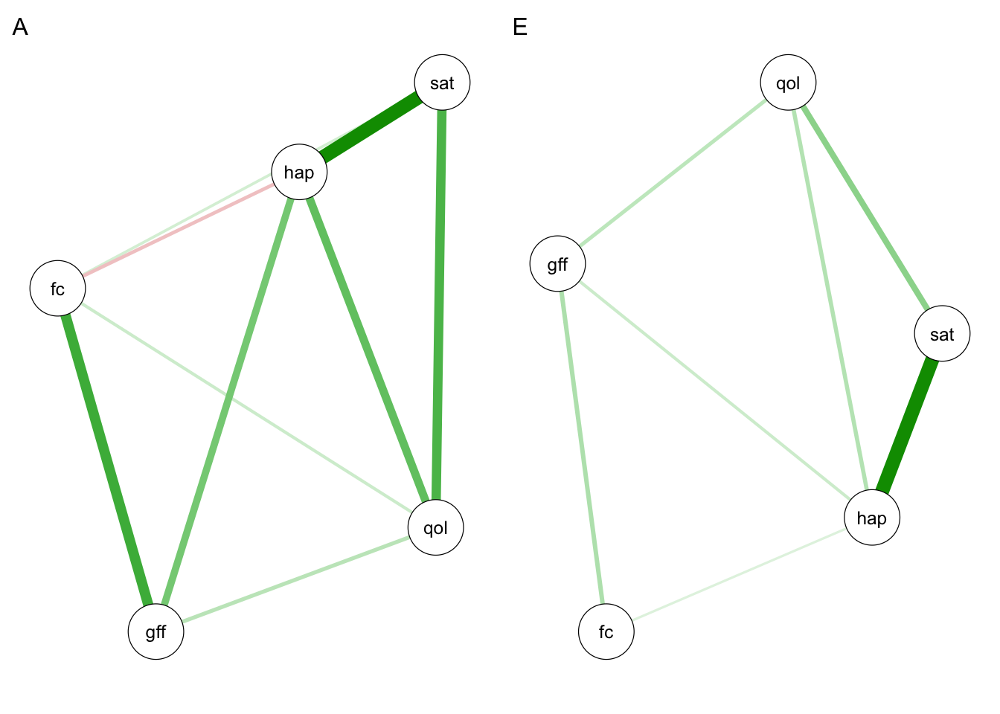
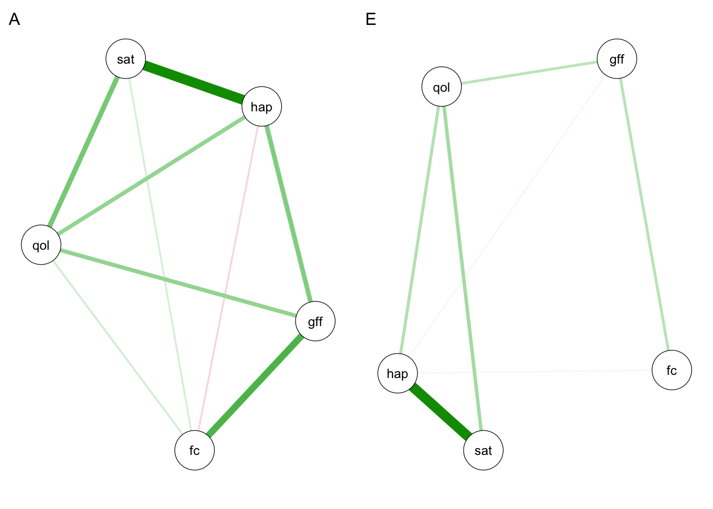

# Load required packages
library(psychonetrics)
library(qgraph)
library(OpenMx)
library(umx)A tutorial on running network twin analyses
twin modelling
genetics
network analysis
In my 2024 paper “Comparing factor and network models of cognitive abilities using twin data”, Robert Plomin and I used a novel network twin analysis to estimate genetic partial correlations among cognitive abilities. Below is a tutorial for running a similar analysis using the GFF example dataset from the umx package.
-
Knyspel, J. & Plomin, R. (2024). Comparing factor and network models of cognitive abilities using twin data. Intelligence, 104, 101833. https://doi.org/10.1016/j.intell.2024.101833
Open Access Download PDF View Preregistration
Feel free to reach out to me with any queries you have!
Our analysis comprises three key steps:
- Run a multivariate twin model on one half of the data to estimate genetic and environmental covariance matrices.
- Use those genetic covariance matrices as the input for initial network analyses.
- Run a unified network twin model on the other half of the data to cross-validate our network structures.
Setup
For this tutorial we will use the GFF dataset from the umx package. It includes five variables: general family functioning (gff), family conflict (fc), quality of life (qol), general happiness (hap), and life satisfaction (sat). For information, see ?GFF.
# Load example data
data(GFF)
# Generate indices for 50/50 sample split
set.seed(12345)
ind <- sample(seq_len(nrow(GFF)), size = floor(0.5*nrow(GFF)))
# Subset and split MZ and DZ data
dzData1 <- subset(GFF[ind,], zyg_2grp == "DZ")
mzData1 <- subset(GFF[ind,], zyg_2grp == "MZ")
dzData2 <- subset(GFF[-ind,], zyg_2grp == "DZ")
mzData2 <- subset(GFF[-ind,], zyg_2grp == "MZ")
# Specify variables for analysis
selDVs <- c("gff", "fc", "qol", "hap", "sat")1) Multivariate twin model
Our first step is to run a generic multivariate twin model to estimate genetic and environmental covariance matrices. The umxACEv() function is a good option for this model. For the sake of simplicity, only an AE model is included here. In practice, it is important to compare ACE, AE, CE and E models to arrive at the best fitting one.
# Run ACE model
ACE <- umxACEv(selDVs = selDVs, dzData = dzData1, mzData = mzData1, sep = "_T")
# Reduce model to AE model
AE <- umxModify(lastFit = ACE, update = ACE$top$C$labels, name = "AE")If the model is producing status codes 5 or 6, it is first worth re-running it with mxTryHard() or using a different optimizer via umx_set_optimizer(). If it is still producing these status codes, we can check if it is locally identified.
# Check if model is locally identified
mxCheckIdentification(AE)$statusIf the model is not locally identified, it would benefit from being made simpler, perhaps by removing the variables with the smallest twin correlations one at a time. Once we have an acceptable model, we can extract the genetic and non-shared environmental covariance matrices and perform some additional checks to ensure they are suitable for the next step.
# Extract A and E matrices
A <- AE$top$A$values
E <- AE$top$E$values
# Check if matrices are symmetric
isSymmetric(A)
isSymmetric(E)
# Check if eigenvalues are non-negative
sum(eigen(A)$values >= 0) > 0
sum(eigen(E)$values >= 0) > 0If a matrix is not symmetric or has any negative eigenvalues, this means it is not positive semi-definite, which will present a problem for network analysis. In this case, it is worth trying umxACE() instead of umxACEv(). This function will ensure that the matrices are positive semi-definite, although it is more easily subject to status codes 5 and 6. If we are happy with the matrices, we can then begin our network analysis.
2) Initial network analysis
Here we will use the covariance matrices from step 1 to estimate network models sparsified using p-value thresholding and stepwise BIC selection. An alternative approach to sparsification here would be regularisation. First, we fit a saturated network model.
# Run saturated network models
networkA <- ggm(covs = A, nobs = length(ind)) |>
runmodel()
networkE <- ggm(covs = E, nobs = length(ind)) |>
runmodel()If runmodel() gives us a warning message here that (1) the information matrix is not positive semi-definite, (2) parameters were estimated near to their bounds or (3) the model failed to converge, it is first worth trying a different optimizer (see ?runmodel). If this does not work, it is worth proceeding to the next step anyway, which is sparsifying the models. This can be enough to solve the issue.
# Sparsify network models
sparseA <- networkA |>
prune() |>
stepup() |>
runmodel()
sparseE <- networkE |>
prune() |>
stepup() |>
runmodel()If we are still receiving warning messages after sparsifying the models, they might benefit from being made simpler, perhaps by removing the least heritable variables one at a time. The warning message about the information matrix being not positive semi-definite might occasionally be a false flag, especially if no other warning messages are given, the model has plausible partial correlations (not equal to or approaching 1 or -1) and produces the same log-likelihood when run multiple times.
# Check log-likelihood of sparsified models
sparseA@fitmeasures$logl
sparseE@fitmeasures$loglWhen the sparsified model produces no warning messages or we are happy that the warning messages can be ignored, we can extract and plot our networks of partial correlations.
# Extract network model estimates
omegaA <- getmatrix(sparseA, "omega")
deltaA <- getmatrix(sparseA, "delta")
omegaE <- getmatrix(sparseE, "omega")
deltaE <- getmatrix(sparseE, "delta")
# Plot networks
par(mfrow = c(1,2))
qgraph(omegaA, labels = selDVs, layout = "spring", title = "A")
qgraph(omegaE, labels = selDVs, layout = "spring", title = "E")
3) Network twin model
Our third and final step is to estimate a unified network twin model that simultaneously models A and E as partial correlation matrices. We does this in the other half of the sample as a form of cross-validation, using the partial correlation values from step 2. Estimating a unified model like this has the benefits of allowing for model fit statistics to be calculated and bootstrapping to be performed. The model can be flexibly adapted to include a C component or to model only one of the components (e.g. A) as a partial correlation matrix if desired.
# Specify additional variables for model
selVars <- xmu_twin_upgrade_selDvs2SelVars(selDVs, "_T", 2)
nVar <- length(selDVs)
# Create base components for network twin model
networkAE <- xmu_make_TwinSuperModel("base", mzData2, dzData2, selDVs, sep = "_T")
# Built additional model components
networkAE.top <- mxModel(networkAE$top,
# DZ twin similarity
umxMatrix("dzAr", "Full", 1, 1, free = FALSE, values = 0.5),
# Combined covariances
mxAlgebra(name = "AE", A + E),
mxAlgebra(name = "hA", dzAr %x% A),
# Expected covariances by zygosity
mxAlgebra(name = "expCovMZ", rbind(cbind(AE,A), cbind(A,AE)), dimnames = list(selVars, selVars)),
mxAlgebra(name = "expCovDZ", rbind(cbind(AE,hA), cbind(hA,AE)), dimnames = list(selVars, selVars)),
# Identity matrix
umxMatrix("I", "Iden", nVar, nVar),
# Additive genetic network
# Using results from step 2 as starting values and constraints
umxMatrix("deltaA", "Diag", nVar, nVar, free = TRUE, values = deltaA),
umxMatrix("omegaA", "Symm", nVar, nVar, free = omegaA != 0, values = omegaA),
mxAlgebra(name = "A", deltaA %*% (solve(I-omegaA)) %*% deltaA),
# Non-shared environmental network
# Using results from step 2 as starting values and constraints
umxMatrix("deltaE", "Diag", nVar, nVar, free = TRUE, values = deltaE),
umxMatrix("omegaE", "Symm", nVar, nVar, free = omegaE != 0, values = omegaE),
mxAlgebra(name = "E", deltaE %*% (solve(I-omegaE)) %*% deltaE)
)If you’re familiar with twin modelling, you might recognise that this model is almost identical to a typical multivariate model, such as the one used in step 1. The only difference is that the A and E covariances are estimated as \(\Delta(I-\Omega)^1\Delta\), where \(\Omega\) is our matrix of partial correlations (i.e. our network) and \(\Delta\) is a diagonal scaling matrix.
# Run model
networkAE <- mxModel(networkAE, networkAE.top) |>
mxTryHard()Running base with 31 parameters
Beginning initial fit attemptRunning base with 31 parameters
Lowest minimum so far: 62052.4209260318
Solution found
Solution found! Final fit=62052.421 (started at 62139.657) (1 attempt(s): 1 valid, 0 errors) Start values from best fit:38.5901046282982,-13.3668862571515,7.79648548997818,23.0176317324942,27.5693472922932,2.3899653420867,1.52239944488783,0.422499190051456,1.19669551190486,1.6426988234192,0.399341758597834,0.228012532206816,0.0894203608933922,0.265396356210378,-0.0765255904052195,0.226277141928524,0.0835354165144468,0.2904105960134,0.617672418713217,3.32098697034475,1.12335463995123,0.79080370482218,2.71605543224306,2.916173253324,0.149863900290934,0.142694075534241,0.0320753643951324,0.0339918408374545,0.163667794780947,0.194483670327578,0.636627915320457As with step 1, if the model is producing status codes 5 or 6, it is worth trying a different optimizer via umx_set_optimizer(). If it is failing to converge but has valid attempts, we can try more attempts (see ?mxTryHard) or again try a different optimizer. If the model is still facing problems, we should check if it is locally identified.
# Check model is locally identified
mxCheckIdentification(networkAE)$statusIf the model is not locally identified, it would benefit from being made simpler, either by removing variables or removing C components if they have been included. Once we are happy with the model, we can first get the summary output, using mxRefModels() to give us model fit statistics.
# Summarise model with fit statistics
summary(networkAE, refModels = mxRefModels(networkAE, TRUE))Running Saturated base with 130 parametersRunning Independence base with 40 parametersSummary of base
free parameters:
name matrix row col Estimate Std.Error A
1 expMean_gff_T1 top.expMean means gff_T1 38.59010463 0.10758664
2 expMean_fc_T1 top.expMean means fc_T1 -13.36688626 0.04914363
3 expMean_qol_T1 top.expMean means qol_T1 7.79648549 0.02341602
4 expMean_hap_T1 top.expMean means hap_T1 23.01763173 0.09787622
5 expMean_sat_T1 top.expMean means sat_T1 27.56934729 0.11466345
6 deltaA_r1c1 top.deltaA 1 1 2.38996534 0.16941191
7 deltaA_r2c2 top.deltaA 2 2 1.52239944 0.04542257
8 deltaA_r3c3 top.deltaA 3 3 0.42249919 0.04299013
9 deltaA_r4c4 top.deltaA 4 4 1.19669551 0.19787435
10 deltaA_r5c5 top.deltaA 5 5 1.64269882 0.15546657
11 omegaA_r2c1 top.omegaA 1 2 0.39934176 0.05343461
12 omegaA_r3c1 top.omegaA 1 3 0.22801253 0.12764957
13 omegaA_r3c2 top.omegaA 2 3 0.08942036 0.06840587
14 omegaA_r4c1 top.omegaA 1 4 0.26539636 0.10802537
15 omegaA_r4c2 top.omegaA 2 4 -0.07652559 0.08920932
16 omegaA_r4c3 top.omegaA 3 4 0.22627714 0.16201806
17 omegaA_r5c2 top.omegaA 2 5 0.08353542 0.05753107
18 omegaA_r5c3 top.omegaA 3 5 0.29041060 0.14710234
19 omegaA_r5c4 top.omegaA 4 5 0.61767242 0.08114828
20 deltaE_r1c1 top.deltaE 1 1 3.32098697 0.08473517
21 deltaE_r2c2 top.deltaE 2 2 1.12335464 0.03061927
22 deltaE_r3c3 top.deltaE 3 3 0.79080370 0.02173415
23 deltaE_r4c4 top.deltaE 4 4 2.71605543 0.08532173
24 deltaE_r5c5 top.deltaE 5 5 2.91617325 0.08425109
25 omegaE_r2c1 top.omegaE 1 2 0.14986390 0.03675147
26 omegaE_r3c1 top.omegaE 1 3 0.14269408 0.03682949
27 omegaE_r4c1 top.omegaE 1 4 0.03207536 0.03125440
28 omegaE_r4c2 top.omegaE 2 4 0.03399184 0.03102033
29 omegaE_r4c3 top.omegaE 3 4 0.16366779 0.04011893
30 omegaE_r5c3 top.omegaE 3 5 0.19448367 0.04072182
31 omegaE_r5c4 top.omegaE 4 5 0.63662792 0.02206175
Model Statistics:
| Parameters | Degrees of Freedom | Fit (-2lnL units)
Model: 31 13160 62052.42
Saturated: 130 13061 61857.59
Independence: 40 13151 66688.44
Number of observations/statistics: 1593/13191
chi-square: χ² ( df=99 ) = 194.8301, p = 3.12413e-08
Information Criteria:
| df Penalty | Parameters Penalty | Sample-Size Adjusted
AIC: 35732.42 62114.42 62115.69
BIC: -34981.18 62281.00 62182.51
CFI: 0.9797863
TLI: 0.9816239 (also known as NNFI)
RMSEA: 0.02465048 [95% CI (0.01845002, 0.03066522)]
Prob(RMSEA <= 0.05): 1
timestamp: 2025-07-18 09:58:15
Wall clock time: 0.555613 secs
optimizer: SLSQP
OpenMx version number: 2.22.7
Need help? See help(mxSummary) We can then extract and plot our networks of partial correlations, similar to step 2.
# Extract network model estimates
omegaA2 <- networkAE$top$omegaA$values
deltaA2 <- networkAE$top$deltaA$values
omegaE2 <- networkAE$top$omegaE$values
deltaE2 <- networkAE$top$deltaE$values
# Plot networks
par(mfrow = c(1,2))
qgraph(omegaA2, labels = selDVs, layout = "spring", title = "A")
qgraph(omegaE2, labels = selDVs, layout = "spring", title = "E")
Comparing steps 2 and 3
Since we used cross-validation here, it is useful for us to compare the consistency in results between our initial network analysis (step 2) and subsequent network twin model (step 3). The more consistent the results are across the two halves of the data, the more confident we can be that our estimated networks are robust. There are many metrics we could use to assess consistency. Here I include root mean squared deviation (RMSD) and \(r^2\) as two examples.
# Create function to calculate RMSD and r2 between symmetric matrices
rmsd <- function(A,B) {
lowerA <- A[lower.tri(A)][A[lower.tri(A)] > 0]
lowerB <- B[lower.tri(B)][B[lower.tri(B)] > 0]
list(A = lowerA,
B = lowerB,
RMSD = sqrt(mean((lowerA-lowerB)^2)),
r2 = cor(lowerA,lowerB)^2)
}
# Calculate RMSD and r2 between network estimates from two methods
rmsd(omegaA2, omegaA)$A
[1] 0.39934176 0.22801253 0.26539636 0.08942036 0.08353542 0.22627714 0.29041060
[8] 0.61767242
$B
[1] 0.40582666 0.13180353 0.27225009 0.09637653 0.08150718 0.31540359 0.36767353
[8] 0.56619175
$RMSD
[1] 0.05696605
$r2
[1] 0.878616rmsd(omegaE2, omegaE)$A
[1] 0.14986390 0.14269408 0.03207536 0.03399184 0.16366779 0.19448367 0.63662792
$B
[1] 0.15286517 0.12333334 0.09418465 0.06419384 0.14008567 0.21996795 0.56211580
$RMSD
[1] 0.04125044
$r2
[1] 0.9799998As we can see, the results of our non-shared environment networks are more consistent than our genetic networks, although overall both perform well. Nice!
Thanks for reading! Feel free to reach out to me if you have any questions
Session Info
sessionInfo()R version 4.5.0 (2025-04-11)
Platform: aarch64-apple-darwin20
Running under: macOS Sequoia 15.5
Matrix products: default
BLAS: /Library/Frameworks/R.framework/Versions/4.5-arm64/Resources/lib/libRblas.0.dylib
LAPACK: /Library/Frameworks/R.framework/Versions/4.5-arm64/Resources/lib/libRlapack.dylib; LAPACK version 3.12.1
locale:
[1] en_US.UTF-8/en_US.UTF-8/en_US.UTF-8/C/en_US.UTF-8/en_US.UTF-8
time zone: Europe/London
tzcode source: internal
attached base packages:
[1] stats graphics grDevices utils datasets methods base
other attached packages:
[1] umx_4.21.0 OpenMx_2.22.7 qgraph_1.9.8
[4] psychonetrics_0.13.1
loaded via a namespace (and not attached):
[1] Rdpack_2.6.4 mnormt_2.1.1 pbapply_1.7-2
[4] gridExtra_2.3 fdrtool_1.2.18 rlang_1.1.6
[7] magrittr_2.0.3 compiler_4.5.0 mgcv_1.9-1
[10] png_0.1-8 systemfonts_1.2.3 vctrs_0.6.5
[13] reshape2_1.4.4 IsingSampler_0.2.4 combinat_0.0-8
[16] quadprog_1.5-8 stringr_1.5.1 pkgconfig_2.0.3
[19] crayon_1.5.3 fastmap_1.2.0 backports_1.5.0
[22] pbivnorm_0.6.0 rmarkdown_2.29 pracma_2.4.4
[25] nloptr_2.2.1 purrr_1.0.4 xfun_0.52
[28] jsonlite_2.0.0 jpeg_0.1-11 psych_2.5.3
[31] parallel_4.5.0 lavaan_0.6-19 cluster_2.1.8.1
[34] R6_2.6.1 stringi_1.8.7 RColorBrewer_1.1-3
[37] boot_1.3-31 rpart_4.1.24 numDeriv_2016.8-1.1
[40] Rcpp_1.0.14 iterators_1.0.14 knitr_1.50
[43] base64enc_0.1-3 polycor_0.8-1 Matrix_1.7-3
[46] splines_4.5.0 nnet_7.3-20 igraph_2.1.4
[49] tidyselect_1.2.1 rstudioapi_0.17.1 abind_1.4-8
[52] yaml_2.3.10 MuMIn_1.48.11 codetools_0.2-20
[55] admisc_0.38 lattice_0.22-6 tibble_3.2.1
[58] plyr_1.8.9 evaluate_1.0.3 foreign_0.8-90
[61] RcppParallel_5.1.10 xml2_1.3.8 pillar_1.10.2
[64] DiagrammeR_1.0.11 checkmate_2.3.2 foreach_1.5.2
[67] stats4_4.5.0 reformulas_0.4.1 generics_0.1.4
[70] VCA_1.5.1 ggplot2_3.5.2 scales_1.4.0
[73] minqa_1.2.8 xtable_1.8-4 gtools_3.9.5
[76] glue_1.8.0 Hmisc_5.2-3 tools_4.5.0
[79] data.table_1.17.4 lme4_1.1-37 visNetwork_2.1.2
[82] cowplot_1.1.3 grid_4.5.0 tidyr_1.3.1
[85] rbibutils_2.3 colorspace_2.1-1 nlme_3.1-168
[88] GA_3.2.4 htmlTable_2.4.3 Formula_1.2-5
[91] cli_3.6.5 kableExtra_1.4.0 textshaping_1.0.1
[94] optimx_2025-4.9 viridisLite_0.4.2 svglite_2.2.1
[97] dplyr_1.1.4 corpcor_1.6.10 glasso_1.11
[100] gtable_0.3.6 digest_0.6.37 htmlwidgets_1.6.4
[103] farver_2.1.2 htmltools_0.5.8.1 lifecycle_1.0.4
[106] MASS_7.3-65